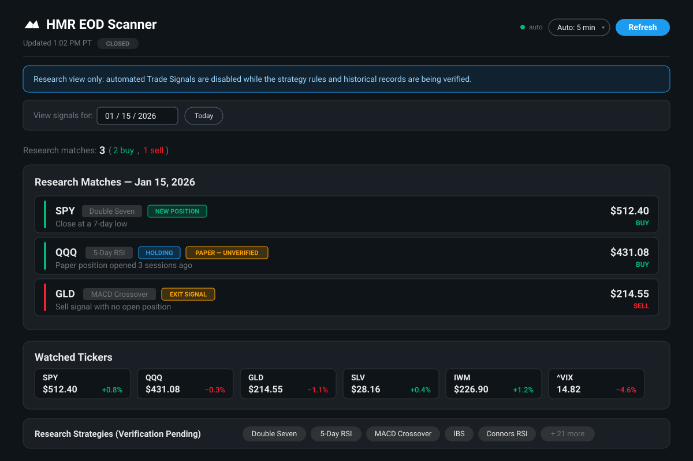
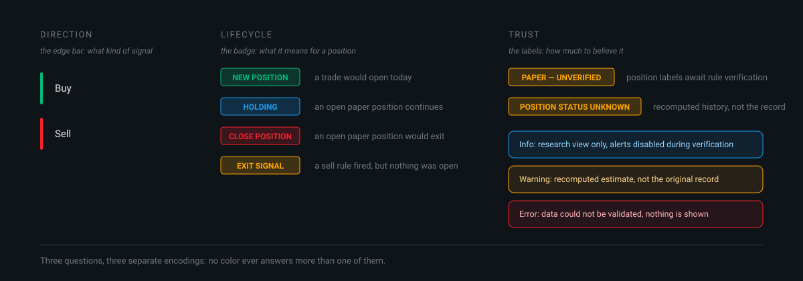
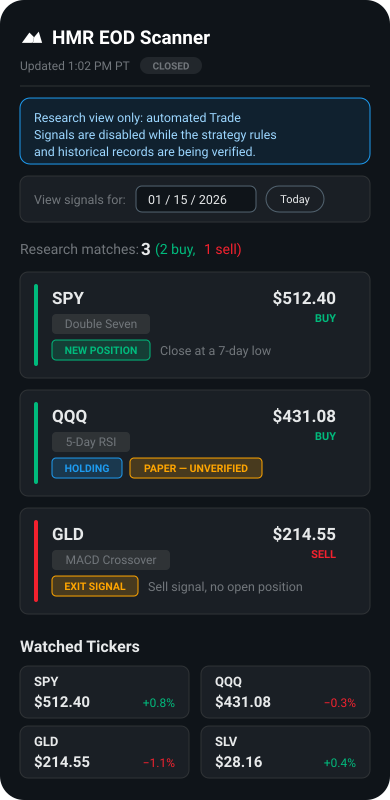
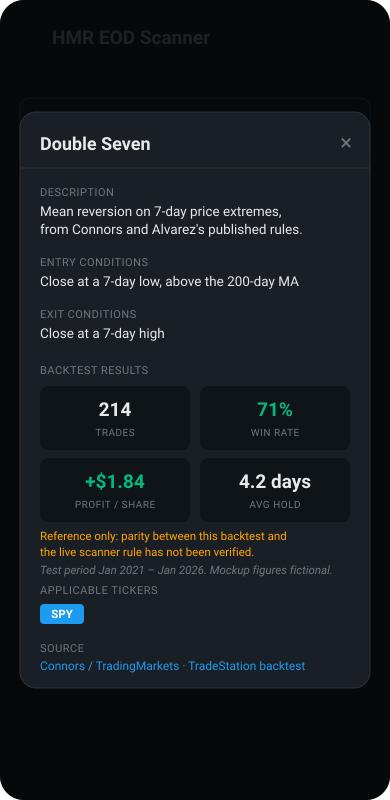
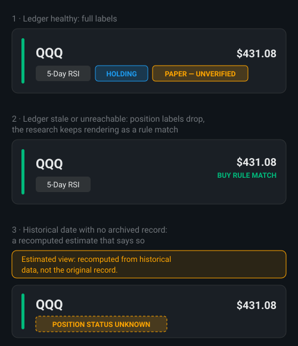

HMR EOD Scanner
Role · Designer & developer
With · Cam Lockrey (strategy research, TradeStation backtests)
Platforms · Web (desktop & phone) · Vercel · vanilla HTML/CSS/JavaScript
An end-of-day analytics dashboard for a family trading-research group. Each evening it scans twenty-six strategies against the market's close and lays out what matched, what the paper positions are doing, and how far to trust each line.

The dashboard, recreated. The scanner is a private tool, so every interface image on this page is a faithful recreation of the shipped design: the watched tickers are real, while every price, date, and figure is fictional.
Problem
High Mountain Road is my family's trading research company. The research is systematic: a library of published mean-reversion and momentum strategies (Connors, Appel, market-internals work), backtested in TradeStation by my collaborator Cam Lockrey and, for some rules, in Python scripts that test or cross-check the same conditions. Every trading day at the close, the same question comes up: which of the twenty-six strategies matched today, and does any match deserve a closer look?
Before the scanner, answering that question meant TradeStation on one Windows machine and rules held in heads and spreadsheets. The people asking are not developers or full-time traders: they are family members reviewing the day from whatever screen is nearest, so the design treats the phone as a first-class surface. The tool had to carry the whole evening ritual: the day's matches, the state of the paper positions, and the backtest record behind each strategy, with nothing to install and nothing to remember.
Insight
A prioritization surface, not a trading terminal
The job of the page is to help someone review and rank the day's signals, not to tell them what to trade. That framing settled the information design. Every signal row has to answer three separate questions: what kind of signal is this (direction), what does it mean for a position we are tracking (lifecycle), and how much should you believe it (trust). The temptation is to collapse those into one indicator; the discipline of the design is that each question gets its own place on the card, so an answer to one never has to be inferred from an answer to another.
The other structural fact is that the page holds two different speeds of data: today's scan, computed minutes ago from the close, and backtest statistics computed from test windows that range from five years to more than thirty. They belong one tap apart, never visually merged, so a fresh match can't borrow authority from an old record.
Prototype
From a command line to a page in two weeks
The first version, February 2026, was a Python command-line scanner that emailed a plain list of matches. Two weeks later it became a web dashboard, deployed on Vercel behind a sign-in, because a list in an inbox answers "what matched" but not "compared to what." The card grammar accreted over the two weeks after that: first the historical date picker and paper-position tracking, then the strategy chips that open their record cards, then the normalized lifecycle states. What settled by early March never left: a colored edge bar for direction, the ticker in bold, the strategy as a tappable chip, a status badge, a one-line reason, and the price at the right edge.
Design decision
Three questions, three encodings
Direction lives in the 4px edge bar: green buy, red sell, readable from across a room. Lifecycle lives in the badge, and it earns its four states. NEW POSITION and CLOSE POSITION are the obvious two. HOLDING exists because a signal that continues yesterday's position is news you act on differently from a fresh entry. The subtle one is EXIT SIGNAL, set apart in orange: a sell rule fired but no tracked position was open. Showing that as CLOSE would imply an action to take; hiding it would hide that the rule fired at all. It gets its own state because it means something the other three don't.

Detail: the anatomy of one signal card, enlarged so the encodings stay readable on a phone. Recreation; figures fictional.

The state system: direction, lifecycle, and trust, each with its own channel.
The evidence is one tap away
Every strategy name on the page is a chip that opens the same card: what the strategy is, its entry and exit conditions, its backtest record (trade count, win rate, per-share profit, average hold, and the test period), and who produced that record, whether a TradeStation run or a Python script. The record card itself opens with a warning that parity between the backtest and the live scanner rule has not been verified. The dashboard never argues that a signal is good. It shows the record, the source, and the caveat, and lets the reviewer weigh a high win rate over a five-year test window against what the market did today.


The phone layout, designed so a full review needs nothing more than a phone, and the strategy card with its backtest grid and parity warning. Recreations; figures fictional.
Failure
The page inherited a dependency it never asked for
In September 2026 the dashboard started failing for its reviewers. The position labels were read from a ledger that a background job kept current; the job missed, the ledger went stale, and the whole page went down with it. The person opening the dashboard saw an outage caused by a system they had no way to know existed. That is the classic analytics-dashboard failure: the display is only as honest as its least reliable feed, and it had been presenting a fragile dependency as a solid fact.
A second failure is quieter and still open: on weekends the page reports that today's data is unavailable, which is true and reads like a malfunction. A correct message that feels broken is a design bug, not a data bug.
Iteration
Degrade by removing labels, never by going down
The fix separated what the page knows from what it believes. The research view now reads the position ledger best-effort, on a short timeout. When the ledger is healthy, signals carry their lifecycle badges plus an explicit trust label, PAPER — UNVERIFIED, because the positions are paper tracking whose rules have not yet been verified against their historical record. Two distinct situations degrade from there, each in its own way. If the ledger is stale or unreachable, the page drops the position labels and keeps rendering the day's research, relabeling each match BUY RULE MATCH or SELL RULE MATCH so the card claims only what the scan itself knows. Separately, if a historical date has no archived record, the page recomputes an estimate and says exactly that: a warning banner, and POSITION STATUS UNKNOWN on the affected rows, with instructions not to treat it as the original record.
That range of states (fully labeled, unlabeled research, an explicit estimate) is the load-bearing design decision of the project. The same honesty runs through the header: automated signal emails are switched off behind interlocks until verification completes, and rather than hide the absent feature, the page opens with a banner saying so. Uncertainty is rendered as content, in the same typography as everything else, instead of being smoothed over.

The three states, enlarged: fully labeled, unlabeled research when the ledger is out, and an explicit estimate for unarchived dates. Recreation; figures fictional.
Final solution
The shipped page reads top to bottom in the order a reviewer thinks: how fresh is this and is the market open (header), what should I know before trusting anything (banners), which day am I looking at (date picker), how big was the day (one summary sentence: three matches, two buy, one sell), then the matches themselves, the watched tickers, and the strategy library. On a phone everything folds to one column and the tap targets grow; the date picker turns the same page into the archive, one day at a time.
Outcome
The scanner shipped in February 2026 and has been part of the research group's evening review since, with an exception log from those reviews driving the iterations above. It is deliberately a research and paper-tracking tool: it trades nothing, moves no money, and its automated alerts stay off until the strategy rules are verified against their historical records. The design target was to make a small research operation's evening question (what matched, what are we tracking, what does the record say) answerable in under a minute from a phone, and to keep every claim on the page exactly as strong as the data behind it, and no stronger.
What's still unfinished
The weekend message still reads like a failure instead of saying "market closed, showing the last session." The pre-close alert email was retired during the verification effort and awaits a decision on whether it returns. And the verification itself (replaying every strategy against its historical record before automated delivery switches back on) is the current work: the dashboard's banner will say so until it's done.
Credits
Cam Lockrey, strategy research and the TradeStation backtests behind most of the statistics cards; the remaining records come from the group's Python backtest scripts. Nestor, strategy research. Le, the daily reviews and the exception log that surfaced the failures worth fixing. The strategy rules themselves come from published systematic-trading research, credited by name in each strategy's source line.
Related work
NotesChordScales — the same design job in music: dense live data, named and ranked in real time
Scale Navigator Dashboard — one surface holding a shared state that everything else reads